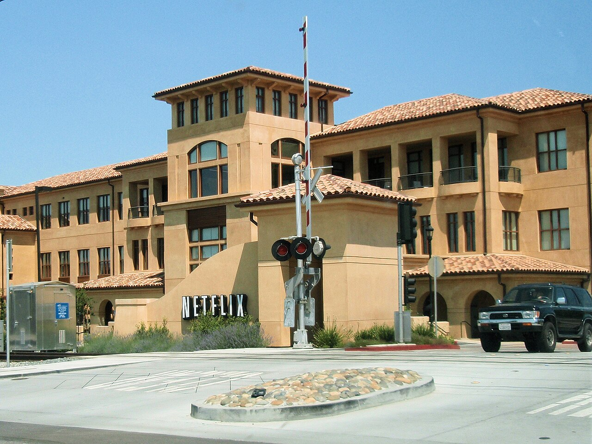

Netflix's operating margin rises to 29.5% as revenue grows 15.9% to $45.2 billion


Netflix's revenue grew 15.9% to $45.2 billion in 2025, and its operating margin widened for a third straight year, to 29.5%. Net income rose 26.0% to $11.0 billion. Free cash flow grew 36.7% to $9.5 billion, and the company spent $9.1 billion buying back its own shares, 96% of that free cash flow.
Revenue growth held near 16%
Revenue grew 15.9% in 2025, after 15.7% in 2024 and 6.7% in 2023. The 10-K says the increase came mainly from more memberships, higher prices and more advertising revenue, partly offset by changes in exchange rates. The earnings release says ad revenue, in only the third year Netflix sold advertising, grew to over $1.5 billion. In 2025 Netflix stopped reporting its membership numbers; the 10-K says it now treats revenue and operating margin as its main measures.
Over seven years revenue has grown 2.9 times, from $15.8 billion in 2018, a compound rate of 16.2% a year.
Margins kept widening, despite a tax charge in Brazil
Operating income rose 27.9% to $13.3 billion. Operating margin has more than doubled since 2019, from 12.9% to 29.5%, and gross margin rose from 38.3% to 48.5% over the same years. The 10-K says the 2025 margin gain came mainly because revenue grew faster than the cost of revenues, sales and marketing, and general and administrative costs.
Cost of revenues, mostly the amortization of films and series, rose 10.6%. The 10-K puts the increase down to $1,121 million more content amortization and $1,116 million more other cost of revenues, mainly from non-income tax assessments in Brazil. Netflix recorded a loss of about $619 million on those assessments as an operating expense in the third quarter. Technology and development spending was 7.5% of revenue.
Diluted earnings per share rose 27.8% to $2.53, after a ten-for-one stock split in November 2025. Other income and expense, mainly interest on debt, came to a net cost of $604 million, and the effective tax rate was 13.7%.
Free cash flow hit an eight-year high, and buybacks took nearly all of it
Cash from operations rose 37.9% to $10.1 billion. Netflix spends most of its cash on films and series, and those payments count as operating cash flow, not capital spending. Purchases of property and equipment were small, at $688 million, so free cash flow came to $9.5 billion, or 20.9% of revenue. Free cash flow was negative in 2018, 2019 and 2021; in 2019 cash out exceeded cash in by $3.1 billion.
Netflix pays no dividend. It spent $9.1 billion on buybacks in 2025, up 45.7%, equal to 96% of free cash flow. Over the three years from 2023 to 2025 it bought back $21.4 billion of stock against $23.3 billion of free cash flow. The diluted share count fell 1.1% in 2025 to 4,344 million.
Debt has shrunk relative to equity
At December 31, 2025, Netflix held $9.1 billion of cash and short-term investments against total debt of $14.5 billion, so debt exceeded cash by $5.4 billion. The gap was $9.7 billion at the end of 2019. Shareholders' equity grew to $26.6 billion, and debt was 54% of equity, against 195% in 2019. Operating income covered interest expense 17.2 times.
Eight years of figures
Per-share figures and share counts for all years reflect the ten-for-one stock split completed on November 14, 2025. Total debt is the balance sheet's long-term debt plus its current debt line. Netflix has no finance lease liabilities in these figures.
Sources: Form 10-K (SEC EDGAR) · Form 10-K filing index · EDGAR company facts for Netflix · Netflix fourth-quarter 2025 shareholder letter (Exhibit 99.1) · Form 8-K of February 27, 2026 · Form 10-Q for the third quarter of 2026. More figures for Netflix are on its company page.